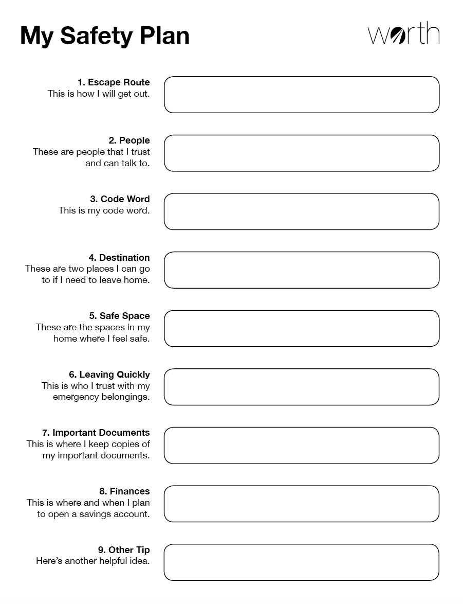

Page 2 of 15: "The only bad status is not knowing your status"
Session 1: Beginning the Journey
Page 3 of 15: HIV testing
Session 1: Beginning the Journey
Page 4 of 15: Why WORTH?
Session 1: Beginning the Journey
Page 5 of 15: Meet the women of WORTH: Rasheeda
Session 1: Beginning the Journey
Page 6 of 15: Reflect on Rasheeda
Reflect on Rasheeda
Rasheeda's story might be similar to yours.
Which of her concerns are important in your
life too?
Thank You
Thanks for taking time to reflect.
You're done!
Swipe to move on.
Session 1: Beginning the Journey
Page 7 of 15: Meet the women of WORTH: Mia
Session 1: Beginning the Journey
Page 8 of 15: Reflect on Mia
Reflect on Mia
What Mia shared about her experience might feel similar to
yours. Which of her concerns are important in your life
too?
Thank You
Thanks for taking time to reflect.
You're done!
Swipe to move on.
Session 1: Beginning the Journey
Page 9 of 15: Pulling into the feelings check-in station
Session 1: Beginning the Journey
Page 10 of 15: Feelings Check-in station
Feelings Check-In Station
How are you feeling today?
Happy
Hopeful
Proud
Peaceful
Strong
Open
Loved
Thankful
Safe
Victorious
Sad
Angry
Worried
Depressed
Confused
Tense
Embarrassed
Frustrated
Hurt
Lonely
I am feeling:
Thanks for checking in. Feelings are important. If you
are not feeling your best right now, we encourage you to
reach out and talk to someone. Acknowledging your
emotional state helps you move forward no matter what
kinds of feelings you are having.
You're done!
Swipe left to move on.
Session 1: Beginning the Journey
Page 11 of 15: Making a commitment to me
Session 1: Beginning the Journey
Page 12 of 15: My commitment to me
Session 1: Beginning the Journey
Page 13 of 15: What did we learn?
Session 1: Beginning the Journey
Page 14 of 15: Summing it all up
During today's session, "beginning the journey" you...
Learned about the importance of regular testing…remember,
the only bad status is not knowing your status.
Met your WORTH facilitators: Lucia and Carol.
Met Rasheeda and Mia, two of the five women of WORTH.
Learned the importance of regularly checking in on our
feelings and introduced you to the about the WORTH
feelings check in station.
Learned the importance of setting goals as we take care of
our health.
Great job again!! We are so glad you joined us.
Session 1: Beginning the Journey
Page 15 of 15: Congrats! You are WORTH it (session 1)!
Session 2: Taking in the View
Page 1 of 27: Welcome to session 2!
Taking in the view while deciding the direction
Session 2: Taking in the View
Page 2 of 27: You are WORTH it!
Session 2: Taking in the View
Page 3 of 27: I am WORTH it!
I am WORTH it
Because I am:
I am
Session 2: Taking in the View
Page 4 of 27: Getting centered
Session 2: Taking in the View
Page 5 of 27: Meet the women of WORTH: Amanda
Session 2: Taking in the View
Page 6 of 27: Reflect on Amanda
Reflect on Amanda
You might have issues and concerns similar to
Amanda's. Which of her concerns are important in your life
too?
Thank You
Thanks for taking time to reflect.
You're done!
Swipe to move on.
Session 2: Taking in the View
Page 7 of 27: Meet the women of WORTH: Charlene
Session 2: Taking in the View
Page 8 of 27: Reflect on Charlene
Reflect on Charlene
Charlene's life story might be similar to yours. Which of
her concerns are important in your life too?
Thank You
Thanks for taking time to reflect.
You're done!
Swipe to move on.
Session 2: Taking in the View
Page 9 of 27: HIV and STIs: What do we know?
Session 2: Taking in the View
Page 10 of 27: Learning about myths and facts
Myth/Fact
Let's play the Myth/Fact Quiz game!
True or False?
You can get HIV by kissing someone who has it.
False:
You cannot get HIV by kissing someone who has it.
Oops! You missed this one.
Well done!
You got it right!
HIV and Kissing
You cannot get HIV by kissing someone who has
it. Saliva may contain HIV but not in
sufficient quantities to transmit the
virus. HIV, the virus that causes AIDS, is
spread through unsafe sex and needle or
syringe sharing where blood is passed.
True or False?
Medications today can greatly reduce the risk of
transmitting HIV if positive or getting HIV if you are
negative. If you are HIV+ and take your medicine
consistently, you are less likely to pass on the virus
during sex.
True:
Antiretroviral therapy slows
down HIV replication in your body and is the most
important ways to keep yourself and your partners
healthy. It is not a cure but can greatly reduce the
risk of transmitting the virus to your sexual/drug
partners. Even with antiretroviral therapy, it is
important to consistently use condoms.
Oops! You missed this one.
Well done!
You got it right!
Antiretroviral therapy slows down HIV replication in your
body and is the most important ways to keep yourself and
your partners healthy. It is not a cure but can greatly
reduce the risk of transmitting the virus to your
sexual/drug partners. Even with antiretroviral therapy, it
is important to consistently use condoms.
True or False?
If you have been recently been exposed to HIV there is no
reason to take medication for it.
False:
This is false since you can reduce the risk of
becoming HIV positive by taking medications within 48
hours following exposure. This is called post-exposure
prophylaxis or PEP.
Oops! You missed this one.
Well done!
You got it right!
This is false since you can reduce the risk of becoming
HIV positive by taking medications within 48 hours
following exposure. This is called post-exposure
prophylaxis or PEP.
True or False?
As long as they are not injected, it is safe to share
needles and "works" with others.
False:
Sharing needles and other works when preparing to
inject drugs increases risk of HIV infection.
Oops! You missed this one.
Well done!
You got it right!
Sharing needles and other works when preparing to inject
drugs increases risk of HIV infection.
True or False?
It is easy to tell that you have chlamydia.
False:
You may not know that you are infected with chlamydia
because you may not notice symptoms. You may be
infected and experience no symptoms. In fact, for many
STIs, such as chlamydia, most people transmit the
infection without experiencing any symptoms. Chlamydia
also has lasting effects and can lead to pelvic
inflammatory disease, ectopic pregnancy, and
infertility among women.
Oops! You missed this one.
Well done!
You got it right!
You may not know that you are infected with chlamydia
because you may not notice symptoms. You may be
infected and experience no symptoms. In fact, for many
STIs, such as chlamydia, most people transmit the
infection without experiencing any symptoms. Chlamydia
also has lasting effects and can lead to pelvic
inflammatory disease, ectopic pregnancy, and
infertility among women.
True or False?
It is not possible to pass sexually transmitted infections
to unborn children.
False:
A mother can pass gonorrhea to her unborn
child. Gonorrhea can be passed on to the child during
birth. It can cause blindness in the newborn.
Oops! You missed this one.
Well done!
You got it right!
A mother can pass gonorrhea to her unborn child. Gonorrhea
can be passed on to the child during birth. It can cause
blindness in the newborn.
True or False?
If you do not have any symptoms, it is not possible to
pass on HSV-2 (genital herpes) to my partner.
False:
You do not have to have an outbreak or other symptoms
in order to be infectious and pass HSV-2 (genital
herpes) to a partner. HSV-2 (genital herpes) shedding
is responsible for genital herpes transmission whether
these episodes lead to recognized outbreaks or are
clinically asymptomatic. In fact, up to 70% of
transmissions can be attributed to asymptomatic
shedding.
Oops! You missed this one.
Well done!
You got it right!
You do not have to have an outbreak or other symptoms
in order to be infectious and pass HSV-2 (genital
herpes) to a partner. HSV-2 (genital herpes) shedding
is responsible for genital herpes transmission whether
these episodes lead to recognized outbreaks or are
clinically asymptomatic. In fact, up to 70% of
transmissions can be attributed to asymptomatic
shedding.
True or False?
HPV (genital warts) causes cancer.
True:
HPV causes cervical cancer. Women should get an
annual exam to receive a pap test to screen for
evidence of HPV (genital warts) infection. HPV is
easily transmissible and the most prevalent STI,
particularly among young women. All boys and girls
ages 11 or 12 years should get vaccinated.
Catch-up vaccines are recommended for males
through age 21 and for females through age 26, if
they did not get vaccinated when they were
younger.
Oops! You missed this one.
Well done!
You got it right!
HPV causes cervical cancer. Women should get an
annual exam to receive a pap test to screen for
evidence of HPV (genital warts) infection. HPV is
easily transmissible and the most prevalent STI,
particularly among young women. All boys and girls
ages 11 or 12 years should get vaccinated.
Catch-up vaccines are recommended for males
through age 21 and for females through age 26, if
they did not get vaccinated when they were
younger.
True or False?
Having an untreated STI can increase the risk for
acquiring HIV.
True:
Having an STI changes the cells lining the vagina,
penis, rectum or mouth. This makes it easier for HIV
to enter your body. If you already have an STI, you
are MORE likely to get infected with HIV if you have
sex with someone who has HIV and you don't use a
condom.
Oops! You missed this one.
Well done!
You got it right!
Having an STI changes the cells lining the vagina, penis,
rectum or mouth. This makes it easier for HIV to enter
your body. If you already have an STI, you are MORE likely
to get infected with HIV if you have sex with someone who
has HIV and you don't use a condom.
True or False?
Most viral STIs cannot be cured.
False:
Once your body is infected with an STI, your body will
always carry it.
Oops! You missed this one.
Well done!
You got it right!
Once your body is infected with an STI, your body will
always carry it.
True or False?
Being high or intoxicated increases the risk of HIV/STI
infection.
True:
Using non-injected drugs like alcohol, marijuana,
crystal meth, or crack cocaine reduces one’s ability
to make good decisions about safe sex or using clean
needles or works. Being intoxicated or high decreases
one’s ability to think about protecting themselves
from HIV/STIs. Cocaine tends to increase a person’s
sex drive and to a degree sexual inhibitions which can
make condom use less likely or and increases the
likelihood of engaging in high risk sexual
activities. Crystal meth has an effect similar to
cocaine and it appears to be leading to increased
unprotected sex and to greater HIV/STI transmission.
Oops! You missed this one.
Well done!
You got it right!
Using non-injected drugs like alcohol, marijuana, crystal meth, or
crack cocaine reduces one’s ability to make good decisions about safe
sex or using clean needles or works. Being intoxicated or high
decreases one’s ability to think about protecting themselves from
HIV/STIs. Cocaine tends to increase a person’s sex drive and to a
degree sexual inhibitions which can make condom use less likely or and
increases the likelihood of engaging in high risk sexual
activities. Crystal meth has an effect similar to cocaine and it
appears to be leading to increased unprotected sex and to greater
HIV/STI transmission.
False:
Women now make up about half of all the people living
with HIV and new cases of HIV in the world.
Oops! You missed this one.
Well done!
You got it right!
Women now make up about half of all the people living
with HIV and new cases of HIV in the world.
Source: taken from PACT/Connect "Facts about HIV/STI
risks" sheet
True or False?
New York City has the most HIV cases in the United States.
True:
NYC has the highest number of HIV cases in the
country. In addition, 1 in 3 people living with HIV in
NYC are women, of which 90% are African American.
Oops! You missed this one.
Well done!
You got it right!
NYC has the highest number of HIV cases in the country. In
addition, 1 in 3 people living with HIV in NYC are women,
of which 90% are African American.
Source: taken from PACT/Connect "Facts about HIV/STI risks" sheet
True or False?
More women in prison and on probation are HIV positive
than men.
True:
In 2004, one of every 42 women in prison was diagnosed
as HIV positive, compared to 1 of every 59 men. In
addition, 12% of men on probation in NYC are reported
to be HIV positive. In a study of 306 women on
probation in NYC in 2012, 14% were found to be HIV
positive.
Oops! You missed this one.
Well done!
You got it right!
In 2004, one of every 42 women in prison was diagnosed as
HIV positive, compared to 1 of every 59 men. In addition,
12% of men on probation in NYC are reported to be HIV
positive. In a study of 306 women on probation in NYC in
2012, 14% were found to be HIV positive.
Thanks for checking in. Feelings are important. If you
are not feeling your best right now, we encourage you to
reach out and talk to someone. Acknowledging your
emotional state helps you move forward no matter what
kinds of feelings you are having.
You're done!
Swipe left to move on.
Session 2: Taking in the View
Page 14 of 27: Meet the women of WORTH: Sofia
Session 2: Taking in the View
Page 15 of 27: Sofia's trauma
Session 2: Taking in the View
Page 16 of 27: Sofia's story
Session 2: Taking in the View
Page 17 of 27: Reflect on Sofia
Reflect on Sofia
The things Sofia experienced may remind you of things you
have been through. Which of her concerns are also
important in your life too?
Thank You
Thanks for taking time to reflect.
You're done!
Swipe to move on.
Session 2: Taking in the View
Page 18 of 27: Protecting myself and those I care about
Session 2: Taking in the View
Page 19 of 27: Stuff I do
Stuff I Do
There are different ways to have sex. All can be fun but
not every choice is equally safe. Some can even be very
risky. During this activity we'll break down what's risky
and what's not.
Stuff I Do
Which of the following things do you do?
Click on each activity to select it.
Stuff I Do
Here's your risk level.
Stuff I Do
Now let's think about how risky you were this past
week. Rate your level of risk for this week:
Thanks! It's a good idea to reflect on your level of risk
on a regular basis.
Things to Remember
You're done!
Swipe to move on.
Session 2: Taking in the View
Page 20 of 27: Pulling into the feelings check-in station
Session 2: Taking in the View
Page 21 of 27: Feelings Check-in station
Feelings Check-In Station
How are you feeling today?
Happy
Hopeful
Proud
Peaceful
Strong
Open
Loved
Thankful
Safe
Victorious
Sad
Angry
Worried
Depressed
Confused
Tense
Embarrassed
Frustrated
Hurt
Lonely
I am feeling:
Thanks for checking in. Feelings are important. If you
are not feeling your best right now, we encourage you to
reach out and talk to someone. Acknowledging your
emotional state helps you move forward no matter what
kinds of feelings you are having.
You're done!
Swipe left to move on.
Session 2: Taking in the View
Page 22 of 27: Setting goals for me: reducing risks
When you set goals to reduce the risks to your health you are
putting yourself first! Get out your goals worksheet or a
piece of paper, write down a goal, and write down a plan to
make it happen. Here are some suggestions to get you started:
Buy a pack of condoms
Increase my use of condoms
Talk with my partner(s) about using condoms
Reduce the number of partners I have
Encourage my partner(s) to get tested
Encourage my partner(s) to get treated for STIs
Speak with a doctor to find out more about PrEP or PEP
Make an appointment to see my HIV care provider
Get treatment for an STI
Take my HIV medication (Antiretroviral Therapy (ART) as
prescribed
Get the medication I need to treat my (STIs) sexually
transmitted infections (STIs)
Not have sex after drinking or taking drugs
Not share needles or unclean injection equipment with
anyone
Session 2: Taking in the View
Page 23 of 27: Setting goals for me: general goals
Session 2: Taking in the View
Page 24 of 27: My Commitment to me
Session 2: Taking in the View
Page 25 of 27: What did we learn?
Session 2: Taking in the View
Page 26 of 27: Summing it all up
"Here's what we covered during today's session, "Taking in the
View":
Factors that increase women's risk as a whole
The fact that some women (i.e. women in the justice
system, women of color) are even more at risk.
You met Amanda, Charlene and Sofia, the remaining women
of WORTH.
Myths and facts about HIV and STIs
How trauma hurts
Behaviors that protect us, and those that place us at risk
Session 2: Taking in the View
Page 27 of 27: Congratulations...you are WORTH it (session 2)!!
Session 3: Planning for Safety
Page 1 of 26: Welcome to session 3!
Planning for my safety and the safety of others
Session 3: Planning for Safety
Page 2 of 26: Focusing on my goals
Session 3: Planning for Safety
Page 3 of 26: My Goals
Take a few moments to think about how you are doing on your goals. Review the goals you set during the first two sessions. How are you doing? Take a moment to write down how you did and maybe what you're going to do next.
Session 3: Planning for Safety
Page 4 of 26: Where we have been / Where we are going
Session 3: Planning for Safety
Page 5 of 26: A problem solving technique
Session 3: Planning for Safety
Page 6 of 26: POP-ing out our problems
Session 3: Planning for Safety
Page 7 of 26: The power of self-talk
Session 3: Planning for Safety
Page 8 of 26: Rasheeda's self-talk
Self-Talk
In this activity, we're going to learn all about it.
What is it?
Define Self-Talk
Which of these descriptions is the best way to define
self-talk?
Correct!
Your internal voice can be
positive or negative, and however it talks to you will
impact how you feel. For example, if you say something
you think was stupid and then you say to yourself "you
are stupid!" it makes you feel worse. Positive
self-talk happens when you notice that you did
something well and congratulate yourself for it.
This is not correct. Your internal voice can be
positive or negative, but however it talks to you will
impact how you feel. For example, if you say something
you think was stupid and then you say to yourself "you
are stupid!" it makes you feel worse. Positive
self-talk happens when you notice that you did
something well and congratulate yourself for it.
Rasheeda's negative self talk
Listen carefully to Rasheeda as she tells her story. Does
she say negative things to herself? Learning to recognize
when we are using negative self-talk is the first step to
changing our internal voice to a more positive support.
Rasheeda's negative self talk
Our self talk makes a big difference our journey down the
road to health. Negative messages can set us back but
positive messages can help move ahead. Sometimes it can be
hard to notice the negative things we say to ourselves,
and if we don’t notice them we can’t stop and make our
self talk more positive. Practice noticing what Rasheeda
said to herself. Which negative messages did Rasheeda give
herself?
Which negative messages did Rasheeda give herself?
Great job!
Correct answers are above
in green.
Give yourself some positive self-talk
We all need more positive self talk. Take a look at this
list of positive statements that you can use when you are
in a difficult situation. Which ones do you think are the
most meaningful for you?
Great job.
Practice these and hold them
close your heart.
You're done!
Swipe to move on.
Session 3: Planning for Safety
Page 9 of 26: How I get support
Session 3: Planning for Safety
Page 10 of 26: How I get support: my map
Making a Map
Let's learn how to create a map of the people in your life
who support you. First, think of someone in your life,
maybe someone who give you friendship or help.
Part 1 of 4: Who is this?
Part 2 of 4: Getting Close
How close are you to this special person? By close we mean
someone you feel emotionally close to or who is someone
you can rely on. This includes someone who may live far
away.
Name:
Special Person
Part 3 of 4: Influence
How does this special person shape your life?
Name:
Special Person
Positive
influence includes things like nurturing and kindness.
Negative
influence includes things like abuse and neglect.
Part 4 of 4: Support
What kind of support does this special person provide?
Name:
Special Person
Influence:
Emotional support
includes things like
listening to you and letting you share your feelings.
emotional/practical
Practical support
is concrete help such as babysitting,
helping you find work, etc.
On the Map
Here is this person in relation to you.
Name:
Special Person
Influence:
Support:
Me
On the Map
Now that you've learned the steps for making a map, get
out paper or your map worksheet and create your own.
You might have only one or two people on your map right
now, or you might have lots of people on your map. Either
way is just fine.
Session 3: Planning for Safety
Page 11 of 26: Strengthening support
When you set goals to strengthen support you are reaching out
to others and telling them that you value them. Get out your
goals worksheet or a piece of paper, write down a goal, and
write down a plan to make it happen. Here are some suggestions
to get you started:
Tell a person on my map that I value them
Talk to a new person this week to expand my network
Do a fun thing with a positive person on my map
Call a person on my social support map to catch up
Session 3: Planning for Safety
Page 12 of 26: Setting goals for me: strengthening support
Session 3: Planning for Safety
Page 13 of 26: Pulling into the feelings check-in station
Session 3: Planning for Safety
Page 14 of 26: Feelings Check in Station
Feelings Check-In Station
How are you feeling today?
Happy
Hopeful
Proud
Peaceful
Strong
Open
Loved
Thankful
Safe
Victorious
Sad
Angry
Worried
Depressed
Confused
Tense
Embarrassed
Frustrated
Hurt
Lonely
I am feeling:
Thanks for checking in. Feelings are important. If you
are not feeling your best right now, we encourage you to
reach out and talk to someone. Acknowledging your
emotional state helps you move forward no matter what
kinds of feelings you are having.
You're done!
Swipe left to move on.
Session 3: Planning for Safety
Page 15 of 26: Protecting myself while having sex
Session 3: Planning for Safety
Page 16 of 26: Fantasy Menu: great but safe sex
How adventurous are you?
Choose the things you have done with one or more sexual partners.
Session 3: Planning for Safety
Page 18 of 26: Reducing risks
Session 3: Planning for Safety
Page 19 of 26: Setting goals for me: reducing risks
Session 3: Planning for Safety
Page 20 of 26: General goals
Session 3: Planning for Safety
Page 21 of 26: Setting goals for me - general goals
Session 3: Planning for Safety
Page 22 of 26: You are WORTH it!
Session 3: Planning for Safety
Page 23 of 26: I am WORTH it!
I am WORTH it
Because I am:
I am
Session 3: Planning for Safety
Page 24 of 26: What did we learn?
Session 3: Planning for Safety
Page 25 of 26: Summing it all up
During today's session, "Planning for Safety", you learned:
All about POP, a technique that helps us solve any problem
The power of positive self-talk
The difference social support makes
Safe sex is great sex - using condoms and the WORTH
Fantasy Menu
Session 3: Planning for Safety
Page 26 of 26: Congratulations...you are WORTH it (session 3)!
Session 4: Staying Strong
Page 1 of 30: Welcome to session 4!
Staying strong and focused
Session 4: Staying Strong
Page 2 of 30: Focusing on my goals
Session 4: Staying Strong
Page 3 of 30: My Goals
Take a few moments to think about how you are doing on your goals. Review the goals you set during the first three sessions. How are you doing? Take a moment to write down how you did and maybe what you're going to do next.
Session 4: Staying Strong
Page 4 of 30: Where we've been... where we're going
Session 4: Staying Strong
Page 5 of 30: Sofia Practices POP!
Session 4: Staying Strong
Page 6 of 30: The power of self-talk revisited
Session 4: Staying Strong
Page 7 of 30: Sofia's self-talk
Session 4: Staying Strong
Page 8 of 30: Safety first and always...
Session 4: Staying Strong
Page 9 of 30: Assessing my relationships
Session 4: Staying Strong
Page 10 of 30: Planning for safety
Session 4: Staying Strong
Page 11 of 30: Writing down my safety plan
Safety Planning
My Safety Plan
Having a plan can keep you safer. Let's write a plan you
can use during an emergency.

Question 1 of 9
Escape Route
Question 1 of 9
Escape Route
It is a good idea to practice how to get out of your house
or apartment safely. What doors, windows, elevators,
stairwells, or fire escapes would you use? Consider which
exits are safest. Write down how you would get out.
Don't forget the paper version!
Please copy this information to your worksheet.
My Safety Plan
Congratulations on completing your plan!
You're done!
Swipe left to move on.
Session 4: Staying Strong
Page 12 of 30: Negotiating condom use while keeping myself safe
Session 4: Staying Strong
Page 13 of 30: Barriers to Condom Use and Practicing Negotiation
Session 4: Staying Strong
Page 14 of 30: Practicing negotiation
Session 4: Staying Strong
Page 15 of 30: When negotiating is not possible
Session 4: Staying Strong
Page 16 of 30: Pulling into the feelings check-in station
Session 4: Staying Strong
Page 17 of 30: Feelings check-in station
Feelings Check-In Station
How are you feeling today?
Happy
Hopeful
Proud
Peaceful
Strong
Open
Loved
Thankful
Safe
Victorious
Sad
Angry
Worried
Depressed
Confused
Tense
Embarrassed
Frustrated
Hurt
Lonely
I am feeling:
Thanks for checking in. Feelings are important. If you
are not feeling your best right now, we encourage you to
reach out and talk to someone. Acknowledging your
emotional state helps you move forward no matter what
kinds of feelings you are having.
You're done!
Swipe left to move on.
Session 4: Staying Strong
Page 18 of 30: How I get support map
Session 4: Staying Strong
Page 19 of 30: Review your map
Take a look at the map you made during session three. Are there any changes you want to make to your map?
Session 4: Staying Strong
Page 20 of 30: Strengthening support
When you set goals to strengthen support you are reaching out
to others and telling them that you value them. Get out your
goals worksheet or a piece of paper, write down a goal, and
write down a plan to make it happen. Here are some suggestions
to get you started:
Tell a person on my map that I value them
Talk to a new person this week to expand my network
Do a fun thing with a positive person on my map
Call a person on my social support map to catch up
Session 4: Staying Strong
Page 21 of 30: Setting goals for me - strengthening support
Session 4: Staying Strong
Page 22 of 30: Reducing risks
Session 4: Staying Strong
Page 23 of 30: Setting goals for me - reducing risks
Session 4: Staying Strong
Page 24 of 30: General goals
Session 4: Staying Strong
Page 25 of 30: Setting goals for me - general goals
Session 4: Staying Strong
Page 26 of 30: You are WORTH it!
Session 4: Staying Strong
Page 27 of 30: I am WORTH it!
I am WORTH it
Because I am:
I am
Session 4: Staying Strong
Page 28 of 30: What did we learn?
Session 4: Staying Strong
Page 29 of 30: Summing it all up
This week we focused on "Staying strong and focused" and you
learned all about:
The importance of creating a safety plan
Techniques we can use to negotiate condom use
What to do when it is not safe to ask our partner to use
condoms
Session 4: Staying Strong
Page 30 of 30: Congratulations...you are WORTH it (session 4)!!
Session 5: Keeping it Going
Page 1 of 17: Welcome to session 5!!
Keeping the journey going: I am WORTH it!
Session 5: Keeping it Going
Page 2 of 17: Focusing on my goals
Session 5: Keeping it Going
Page 3 of 17: My goals
Take a few moments to think about how you are doing on your goals. Review the goals you set during the first four sessions. How are you doing? Take a moment to write down how you did and maybe what you're going to do next.
Session 5: Keeping it Going
Page 4 of 17: Where we've been...where we're going
Session 5: Keeping it Going
Page 5 of 17: Protecting myself and those I care about
Session 5: Keeping it Going
Page 6 of 17: Stuff I do
Stuff I Do
There are different ways to have sex. All can be fun but
not every choice is equally safe. Some can even be very
risky. During this activity we'll break down what's risky
and what's not.
Stuff I Do
Which of the following things do you do?
Click on each activity to select it.
Stuff I Do
Here's your risk level.
Stuff I Do
Now let's think about how risky you were this past
week. Rate your level of risk for this week:
Thanks! It's a good idea to reflect on your level of risk
on a regular basis.
Things to Remember
You're done!
Swipe to move on.
Session 5: Keeping it Going
Page 7 of 17: Check out what you learned
Session 5: Keeping it Going
Page 8 of 17: Reducing risks
Session 5: Keeping it Going
Page 9 of 17: Setting goals for me - reducing risks
Session 5: Keeping it Going
Page 10 of 17: Passing it along
Session 5: Keeping it Going
Page 11 of 17: Message in a bottle
We would also like you to share your experience in WORTH with someone you care about by writing a letter; we call it a "message in a bottle". Think about how you felt at the beginning of this journey and then consider what would you tell another person about how to protect herself. Now that you have developed this message, think about who you might share this with and how you might share it with them. If there is someone you know who really needs this information that might be a good place to begin.
Session 5: Keeping it Going
Page 12 of 17: You are WORTH it!
Session 5: Keeping it Going
Page 13 of 17: I am WORTH it!
I am WORTH it
Because I am:
I am
Session 5: Keeping it Going
Page 14 of 17: What did we learn?
Session 5: Keeping it Going
Page 15 of 17: Summing it all up
You completed the final session! Congratulations again! During
today's final session, "Keeping the journey going: I am WORTH
it!", you:
Created a "message in a bottle" summarizing all you
learned during WORTH - consider passing this message along
Session 5: Keeping it Going
Page 16 of 17: Congratulations! You completed WORTH!!